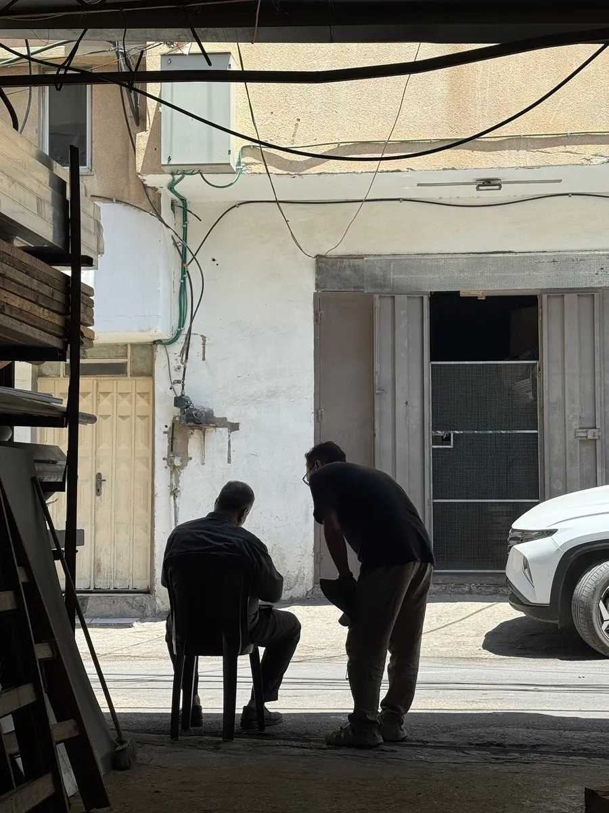
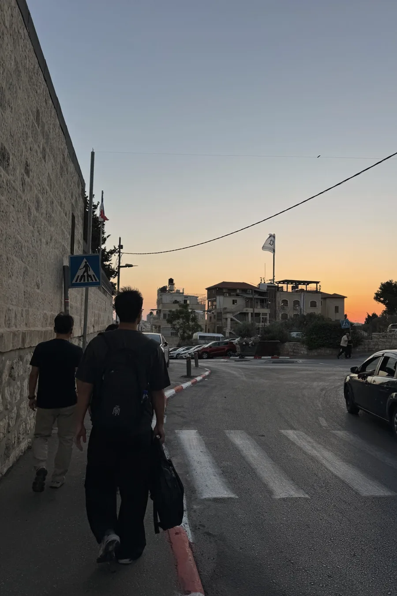
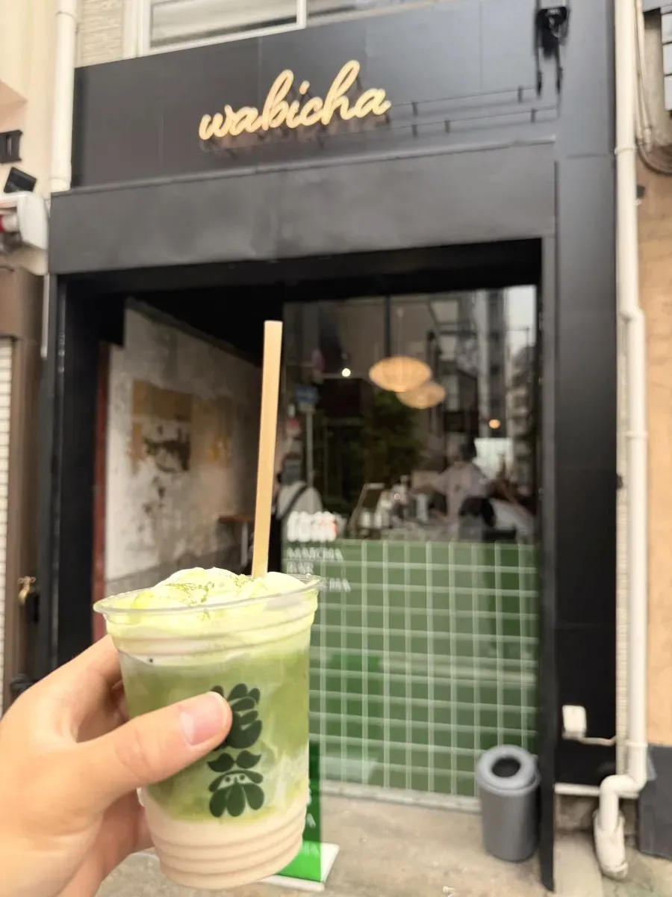

Beyond
The places and communities that shape how I see people, brands and what makes something worth showing up for.

1 / 6Neighborhood Work
Ramallah, Palestine
Serving alongside local families and shop owners on a community service trip.
31.90° N · 35.20° E
Beyond
The places and communities that shape how I see people, brands and what makes something worth showing up for.

2 / 6Mount of Olives
Jerusalem, Israel
Walking through the old city at sunset on a service trip.
31.78° N · 35.24° E
 3 / 6
3 / 6Uji bridge
Uji, Japan
The river town that made Japan’s matcha famous.
34.88° N · 135.80° E

4 / 6Wabicha
Osaka, Japan
Following matcha from its source to a modern Osaka tea bar.
34.69° N · 135.50° E
 5 / 6
5 / 6Soft serve
Palo Alto, California
Field research on the matcha craze.
37.44° N · 122.14° W
 6 / 6
6 / 6Feeding the deer
Nara, Japan
Over a thousand deer roam Nara Park, protected as a national natural monument.
34.69° N · 135.84° E